6.9 Der DK-Automat./wly/06/09-dk-automat.wly:2:5
Von der Grammatik ./wly/06/09-dk-automat.wly:5:9$\hat{G}$ zu einem./wly/06/09-dk-automat.wly:5:36 nichtdeterministischen endlichen Automaten./wly/06/09-dk-automat.wly:6:9
Um den ./wly/06/09-dk-automat.wly:8:5$LR(0)$-Parser./wly/06/09-dk-automat.wly:8:19 gemäß ./wly/06/09-dk-automat.wly:8:19Algorithmus 6.8.7./wly/ zu implementieren, müssen wir./wly/06/09-dk-automat.wly:9:5 den Test ./wly/06/09-dk-automat.wly:10:5$\gamma \stackrel{?}\in \Front(G)$ ./wly/06/09-dk-automat.wly:10:48 durchführen und, falls die Antwort ./wly/06/09-dk-automat.wly:11:5ja./wly/06/09-dk-automat.wly:11:41 ist, die Blüte./wly/06/09-dk-automat.wly:11:44 finden. Dies gelingt uns, indem wir die Grammatik./wly/06/09-dk-automat.wly:12:5 ./wly/06/09-dk-automat.wly:13:5$\hat{G}$ in einen endlichen Automaten umwandeln../wly/06/09-dk-automat.wly:13:14 ./wly/06/09-dk-automat.wly:14:5Theorem 5.3.8./wly/ und die ihm./wly/06/09-dk-automat.wly:14:5 vorhergehende Konstruktion zeigen, wie man das macht../wly/06/09-dk-automat.wly:15:5 Anstatt allerdings das Theorem als "black box" zu./wly/06/09-dk-automat.wly:16:5 verwenden, gehen wir die Konstruktion anhand zweier./wly/06/09-dk-automat.wly:17:5 fiktiver Produktion ./wly/06/09-dk-automat.wly:18:5$X \rightarrow aBcDe$ und./wly/06/09-dk-automat.wly:18:46 ./wly/06/09-dk-automat.wly:19:5$X \rightarrow uVw$ Schritt für Schritt durch. Wir./wly/06/09-dk-automat.wly:19:24 erkennen die Terminale ./wly/06/09-dk-automat.wly:20:5$\Sigma = \{a,c,e,u,w\}$ und./wly/06/09-dk-automat.wly:20:52 die Nichtterminale ./wly/06/09-dk-automat.wly:21:5$N = \{X,B,D,V\}$../wly/06/09-dk-automat.wly:21:41 In ./wly/06/09-dk-automat.wly:21:41$\dk{G}$ ./wly/06/09-dk-automat.wly:21:54 sind \{a,c,e,u,w,A,B,D,V\} alles Terminale, und die./wly/06/09-dk-automat.wly:22:5 Nichtterminale sind./wly/06/09-dk-automat.wly:23:5 ./wly/06/09-dk-automat.wly:24:5$\dk{N} = \{\dk{X}, \dk{B}, \dk{D}, \dk{V}\}.$ Die./wly/06/09-dk-automat.wly:24:51 Produktionen von ./wly/06/09-dk-automat.wly:25:5$\hat{G}$ sind./wly/06/09-dk-automat.wly:25:31
$$
\begin{align*}
\dk{X}&
\rightarrow a\dk{B} \\ \dk{X}&\rightarrow a\dkt{B}c\dk{D} \\ \dk{X}
&\rightarrow a\dkt{B}c\dkt{D}e \\&\\ \dk{X}&\rightarrow u\dk{V}
\dk{X}&\rightarrow u\dkt{V}w
\end{align*}
$$
Diese übersetzen wir in einen verallgemeinert./wly/06/09-dk-automat.wly:34:5 nichtdeterministischen Automaten, bei dem jede Kante./wly/06/09-dk-automat.wly:35:5 mit einem Wort ./wly/06/09-dk-automat.wly:36:5$\beta \in (\Sigma \cup N)^*$,./wly/06/09-dk-automat.wly:36:49 also./wly/06/09-dk-automat.wly:36:49 aus ./wly/06/09-dk-automat.wly:37:5Terminalen./wly/06/09-dk-automat.wly:37:10 der Grammatik ./wly/06/09-dk-automat.wly:37:21$\dk{G}$ beschriftet./wly/06/09-dk-automat.wly:37:44 ist:./wly/06/09-dk-automat.wly:38:5
Wir brechen die Kanten in Stücke, so dass jede mit./wly/06/09-dk-automat.wly:45:5 genau einem Zeichen beschriftet ist:./wly/06/09-dk-automat.wly:46:5
 ./public/img/context-free/LR/hat-G-to-generalized-automaton-break-edges.svg
./public/img/context-free/LR/hat-G-to-generalized-automaton-break-edges.svg
Nochmal: jede Kante ist mit einem ./wly/06/09-dk-automat.wly:53:5Terminalsymbol./wly/06/09-dk-automat.wly:53:40 ./wly/06/09-dk-automat.wly:53:55 beschriftet. Die Symbole ./wly/06/09-dk-automat.wly:54:5$B, D, V$ sind ./wly/06/09-dk-automat.wly:54:39Terminale./wly/06/09-dk-automat.wly:54:46 ./wly/06/09-dk-automat.wly:54:56 in der Grammatik ./wly/06/09-dk-automat.wly:55:5$\dk{G}$../wly/06/09-dk-automat.wly:55:30 Wenn wir ./wly/06/09-dk-automat.wly:55:30$\epsilon$ ./wly/06/09-dk-automat.wly:55:51 -Übergänge zulassen, können wir den Automaten./wly/06/09-dk-automat.wly:56:5 übersichtlicher gestalten und mehrere Zustände./wly/06/09-dk-automat.wly:57:5 zusammenfassen:./wly/06/09-dk-automat.wly:58:5
Wir werden uns noch bessere Namen für die./wly/06/09-dk-automat.wly:65:5 Zwischenzustände ausdenken. Wenn wir uns an die./wly/06/09-dk-automat.wly:66:5 Rechtsableitungsbäume mit Stamm, linkem Rand, Blüte./wly/06/09-dk-automat.wly:67:5 und rechtem Rest erinnern, dann haben die./wly/06/09-dk-automat.wly:68:5 Zwischenzustände eine klare Bedeutung: der Zustand ./wly/06/09-dk-automat.wly:69:5$4$ ./wly/06/09-dk-automat.wly:69:59 oben zum Beispiel bedeutet, dass der Knoten ./wly/06/09-dk-automat.wly:70:5$X$ im./wly/06/09-dk-automat.wly:70:52 Stamm mit ./wly/06/09-dk-automat.wly:71:5$a, B, c, D, e$ beschriftete Kinder hat und./wly/06/09-dk-automat.wly:71:30 wir uns bereits entschieden haben, dass ./wly/06/09-dk-automat.wly:72:5$a$,./wly/06/09-dk-automat.wly:72:48 ./wly/06/09-dk-automat.wly:72:48$B$ und./wly/06/09-dk-automat.wly:72:53 ./wly/06/09-dk-automat.wly:73:5$c$ ./wly/06/09-dk-automat.wly:73:8Blätter./wly/06/09-dk-automat.wly:73:10 sein sollen, also zum linken Rand./wly/06/09-dk-automat.wly:73:18 gehören. Der Übergang ./wly/06/09-dk-automat.wly:74:5$\boxed{4} \step{D} \boxed{5}$ ./wly/06/09-dk-automat.wly:74:57 entspricht dann der Entscheidung, auch ./wly/06/09-dk-automat.wly:75:5$D$ zu einem./wly/06/09-dk-automat.wly:75:47 Blatt zu machen, während./wly/06/09-dk-automat.wly:76:5 ./wly/06/09-dk-automat.wly:77:5$\boxed{4} \step{\epsilon} \dk{D}$ der Entscheidung./wly/06/09-dk-automat.wly:77:39 entspricht, ./wly/06/09-dk-automat.wly:78:5$D$ zu einem Knoten im Stamm zu machen./wly/06/09-dk-automat.wly:78:20 und eine ./wly/06/09-dk-automat.wly:79:5$D$-Produktion./wly/06/09-dk-automat.wly:79:17 anzuwenden. Die beiden./wly/06/09-dk-automat.wly:79:17 ./wly/06/09-dk-automat.wly:80:5$\epsilon$-Übergänge./wly/06/09-dk-automat.wly:80:15 von ./wly/06/09-dk-automat.wly:80:15$\dk{X}$ nach ./wly/06/09-dk-automat.wly:80:38$\boxed{1}$ ./wly/06/09-dk-automat.wly:80:55 bzw. ./wly/06/09-dk-automat.wly:81:5$\boxed{7}$ stellen einfach sicher, dass wir uns./wly/06/09-dk-automat.wly:81:21 erst entscheiden, mit welcher Produktion wir den./wly/06/09-dk-automat.wly:82:5 Stammknoten ./wly/06/09-dk-automat.wly:83:5$X$ expandieren, bevor wir weitermachen../wly/06/09-dk-automat.wly:83:20 Daher nennen wir Zustand ./wly/06/09-dk-automat.wly:84:5$\boxed{4}$ um in./wly/06/09-dk-automat.wly:84:41 ./wly/06/09-dk-automat.wly:85:5$\boxed{X \rightarrow aBc.De}$,./wly/06/09-dk-automat.wly:85:35 wobei der Punkt ./wly/06/09-dk-automat.wly:85:35$.$ ./wly/06/09-dk-automat.wly:85:56 markiert, welchen Teil der rechten Seite wir bereits./wly/06/09-dk-automat.wly:86:5 gelesen haben. Wir erhalten folgendes Bild:./wly/06/09-dk-automat.wly:87:5
 ./public/img/context-free/LR/hat-G-to-DK.svg
./public/img/context-free/LR/hat-G-to-DK.svg
Die ./wly/06/09-dk-automat.wly:94:9$a^{m+k}b^m$-Grammatik./wly/06/09-dk-automat.wly:94:25
Wir illustrieren obige Vorgehensweise nun anhand der./wly/06/09-dk-automat.wly:96:5 Grammatik./wly/06/09-dk-automat.wly:97:5
$$
\begin{align*}
G&: \\ S&\rightarrow aS \\ S&\rightarrow B \\ B&
\rightarrow aBb \\ B&\rightarrow ab
\end{align*}
$$
Laut Gebrauchsanweisung aus dem letzten Teilkapitel./wly/06/09-dk-automat.wly:104:5 hat die Grammatik ./wly/06/09-dk-automat.wly:105:5$\dk{G}$ die Terminalsymbole./wly/06/09-dk-automat.wly:105:31 ./wly/06/09-dk-automat.wly:106:5$\Sigma \cup N = \{a, b, S, B\}$ und die./wly/06/09-dk-automat.wly:106:37 Nichtterminale ./wly/06/09-dk-automat.wly:107:5$\dk{N} = \{\dk{S}, \dk{B}\}$../wly/06/09-dk-automat.wly:107:49 Die./wly/06/09-dk-automat.wly:107:49 Produktionen von ./wly/06/09-dk-automat.wly:108:5$\dk{G}$ ergeben sich wie folgt:./wly/06/09-dk-automat.wly:108:30
$$
\begin{align*}
\begin{array}{l|l} \textnormal{Produktion in $G$}&
\textnormal{Produktion in $\hat{G}$} \\ \hline % % S \rightarrow aS&
{\dk{S}} \rightarrow \dkt{a} \dk{S}\\&{\dk{S}} \rightarrow \dkt{a}
\dkt{S}\\ \hline % S \rightarrow B&{\dk{S}} \rightarrow \dk{B}\\&
{\dk{S}} \rightarrow \dkt{B}\\ \hline % B \rightarrow aBb&{\dk{B}}
\rightarrow \dkt{a}\dk{B}\\&{\dk{B}} \rightarrow
\dkt{a}\dkt{B}\dkt{b}\\ \hline % B \rightarrow ab&{\dk{B}} \rightarrow
\dkt{ab} \end{array}
\end{align*}
$$
In dieser Grammatik betrachten wir die./wly/06/09-dk-automat.wly:121:5 Rechtsableitung./wly/06/09-dk-automat.wly:122:5
$$
\begin{align*}
S \Step{} aS \Step{} aaS \Step{} aaB \Step{} aaaBb
\Step{} aaaaBbb \Step{} aaaaaBbbb
\end{align*}
$$
Es gilt ./wly/06/09-dk-automat.wly:129:5$\front(aaaaaBbbb) = aaaaaBb$../wly/06/09-dk-automat.wly:129:42 In ./wly/06/09-dk-automat.wly:129:42$\hat{G}$ ./wly/06/09-dk-automat.wly:129:56 entspricht die obige Rechtsableitung der Ableitung./wly/06/09-dk-automat.wly:130:5
$$
\begin{align*}
\hat{S} \Step{} a\hat{S} \Step{} aa\hat{S} \Step{}
aa\hat{B} \Step{} aaa\hat{B} \Step{} aaaaBb
\end{align*}
$$
Den nichtdeterministischen DK-Automaten (mit./wly/06/09-dk-automat.wly:137:5 ./wly/06/09-dk-automat.wly:138:5$\epsilon$ -Übergängen) können wir nun Schritt für./wly/06/09-dk-automat.wly:138:15 Schritt zeichnen:./wly/06/09-dk-automat.wly:139:5
./public/img/context-free/LR/dk-automaton-5-nea-aaabb/01.svg
 ./public/img/context-free/LR/dk-automaton-5-nea-aaabb/02.svg
./public/img/context-free/LR/dk-automaton-5-nea-aaabb/02.svg
 ./public/img/context-free/LR/dk-automaton-5-nea-aaabb/03.svg
./public/img/context-free/LR/dk-automaton-5-nea-aaabb/03.svg
 ./public/img/context-free/LR/dk-automaton-5-nea-aaabb/04.svg
./public/img/context-free/LR/dk-automaton-5-nea-aaabb/04.svg
 ./public/img/context-free/LR/dk-automaton-5-nea-aaabb/05.svg
./public/img/context-free/LR/dk-automaton-5-nea-aaabb/05.svg
 ./public/img/context-free/LR/dk-automaton-5-nea-aaabb/06.svg
./public/img/context-free/LR/dk-automaton-5-nea-aaabb/06.svg
./public/img/context-free/LR/dk-automaton-5-nea-aaabb/07.svg
 ./public/img/context-free/LR/dk-automaton-5-nea-aaabb/08.svg
./public/img/context-free/LR/dk-automaton-5-nea-aaabb/08.svg
 ./public/img/context-free/LR/dk-automaton-5-nea-aaabb/09.svg
./public/img/context-free/LR/dk-automaton-5-nea-aaabb/09.svg
./public/img/context-free/LR/dk-automaton-5-nea-aaabb/10.svg
 ./public/img/context-free/LR/dk-automaton-5-nea-aaabb/11.svg
./public/img/context-free/LR/dk-automaton-5-nea-aaabb/11.svg
Der nichtdeterministische DK-Automat./wly/06/09-dk-automat.wly:156:9
Definition 6.9.1./wly/06/09-dk-automat.wly:158:6 ./wly/06/09-dk-automat.wly:158:25 Für eine kontextfreie Grammatik ist der./wly/06/09-dk-automat.wly:159:9 nichtdeterministische DK-Automat (NDK-Automat) ein./wly/06/09-dk-automat.wly:160:9 nichtdeterministischer endlicher Automat mit./wly/06/09-dk-automat.wly:161:9 ./wly/06/09-dk-automat.wly:162:9$\epsilon$ -Übergängen, den wir wie folgt./wly/06/09-dk-automat.wly:162:19 konstruieren:./wly/06/09-dk-automat.wly:163:9
-
Für jede Produktion ./wly/06/09-dk-automat.wly:167:17$X \rightarrow \beta$ gibt es./wly/06/09-dk-automat.wly:167:58 einen Zustandsübergang./wly/06/09-dk-automat.wly:168:17 ./wly/06/09-dk-automat.wly:169:17$\boxed{X} \step{\epsilon} \boxed{X \step{} . \beta}$
-
Für jede Zerlegung ./wly/06/09-dk-automat.wly:172:17$\beta = \beta_1 \sigma \beta_2$ ./wly/06/09-dk-automat.wly:172:68 gibt es den Zustandsübergang./wly/06/09-dk-automat.wly:173:17 ./wly/06/09-dk-automat.wly:174:17$\boxed{X \step{} \beta_1 . \sigma \beta_2} \step{\sigma} \boxed{X \step{} \beta_1 \sigma . \beta_2}$
-
Falls ./wly/06/09-dk-automat.wly:179:17$\sigma$ ein Nichtterminal ./wly/06/09-dk-automat.wly:179:31$Y$ ist, also./wly/06/09-dk-automat.wly:179:53 ./wly/06/09-dk-automat.wly:180:17$\beta = \beta_1 Y \beta_2$,./wly/06/09-dk-automat.wly:180:44 gibt es zusätzlich noch./wly/06/09-dk-automat.wly:180:44 den Übergang./wly/06/09-dk-automat.wly:181:17 ./wly/06/09-dk-automat.wly:182:17$\boxed{X \step{} \beta_1 . Y \beta_2} \step{\epsilon} \boxed{Y}$
Die Interpretation dieser Übergänge in./wly/06/09-dk-automat.wly:185:9 Rechtsableitungsbaum-Begriffen ist: (1) heißt, dass./wly/06/09-dk-automat.wly:186:9 ./wly/06/09-dk-automat.wly:187:9$\boxed{X}$ ein Stammknoten ist und wir ihn anhand./wly/06/09-dk-automat.wly:187:20 der Regel ./wly/06/09-dk-automat.wly:188:9$X \rightarrow \beta$ expandieren; wir./wly/06/09-dk-automat.wly:188:40 erschaffen also Kinder, die mit den Symbolen von./wly/06/09-dk-automat.wly:189:9 ./wly/06/09-dk-automat.wly:190:9$\beta$ beschriftet sind. (2) heißt, dass wir uns./wly/06/09-dk-automat.wly:190:16 bereits entschieden haben, die Kinder ./wly/06/09-dk-automat.wly:191:9$\beta_1$ von./wly/06/09-dk-automat.wly:191:56 ./wly/06/09-dk-automat.wly:192:9$\boxed{X}$ nicht zu expandieren, sie also zum linken./wly/06/09-dk-automat.wly:192:20 Rand werden zu lassen, und diese Entscheidung nun auch./wly/06/09-dk-automat.wly:193:9 für das Symbol ./wly/06/09-dk-automat.wly:194:9$\sigma$ treffen; (3) bedeutet, dass./wly/06/09-dk-automat.wly:194:32 wir uns entschließen ./wly/06/09-dk-automat.wly:195:9$\sigma$ (das hier ein./wly/06/09-dk-automat.wly:195:38 Nichtterminal ./wly/06/09-dk-automat.wly:196:9$Y$ ist) weiter zu expandieren, es also./wly/06/09-dk-automat.wly:196:26 nicht dem linken Rand zuordnen, sondern zu einem./wly/06/09-dk-automat.wly:197:9 Stammknoten werden lassen, uns aber noch nicht./wly/06/09-dk-automat.wly:198:9 entschlossen haben, welche Produktion./wly/06/09-dk-automat.wly:199:9 ./wly/06/09-dk-automat.wly:200:9$Y \rightarrow ?$ wir anwenden wollen. Der./wly/06/09-dk-automat.wly:200:26 Startzustand ist ./wly/06/09-dk-automat.wly:201:9$\boxed{S}$../wly/06/09-dk-automat.wly:201:37 Jeder Zustand der Form./wly/06/09-dk-automat.wly:201:37 ./wly/06/09-dk-automat.wly:202:9$\boxed{X \step{} \beta .}$ ist ein akzeptierender./wly/06/09-dk-automat.wly:202:36 Zustand../wly/06/09-dk-automat.wly:203:9
Den NDK-Automaten deterministisch machen./wly/06/09-dk-automat.wly:206:9
Wir wissen ja bereits, wie man einen./wly/06/09-dk-automat.wly:208:5 nichtdeterministischen Automaten deterministisch./wly/06/09-dk-automat.wly:209:5 macht: die Potenzmengenkonstruktion aus ./wly/06/09-dk-automat.wly:210:5Kapitel 5.3.7./wly/. Hier können wir diese leider nicht./wly/06/09-dk-automat.wly:211:5 direkt anwenden, da der obige Automat ./wly/06/09-dk-automat.wly:212:5$\epsilon$ ./wly/06/09-dk-automat.wly:212:53 -Übergänge hat. Wie geht das also nun? Im./wly/06/09-dk-automat.wly:213:5 deterministischen Automaten ist wie bei der./wly/06/09-dk-automat.wly:214:5 Potenzmengenkonstruktion jeder Zustand eine ./wly/06/09-dk-automat.wly:215:5Menge./wly/06/09-dk-automat.wly:215:50 ./wly/06/09-dk-automat.wly:215:56 ./wly/06/09-dk-automat.wly:216:5$R$ von Zuständen des nichtdeterministischen./wly/06/09-dk-automat.wly:216:8 Automaten. Wenn wir nun in eine solche Menge ./wly/06/09-dk-automat.wly:217:5$R$ ./wly/06/09-dk-automat.wly:217:53 einen Zustand ./wly/06/09-dk-automat.wly:218:5$q$ einfügen, dann fügen wir auch alle./wly/06/09-dk-automat.wly:218:22 Zustände ./wly/06/09-dk-automat.wly:219:5$q'$ hinzu, zu denen es einen ./wly/06/09-dk-automat.wly:219:18$\epsilon$ ./wly/06/09-dk-automat.wly:219:54 -Übergang ./wly/06/09-dk-automat.wly:220:5$q \step{\epsilon} q'$ gibt. Für den obigen./wly/06/09-dk-automat.wly:220:37 nichtdeterministischen Automaten sieht das dann so./wly/06/09-dk-automat.wly:221:5 aus:./wly/06/09-dk-automat.wly:222:5
./public/img/context-free/LR/dk-automaton-6-dea-aaabb/dk-dea-for-aaabb-01-01.svg
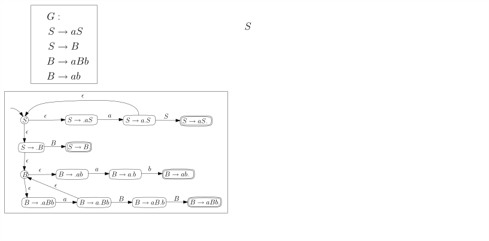./public/img/context-free/LR/dk-automaton-6-dea-aaabb/dk-dea-for-aaabb-01-02.svg
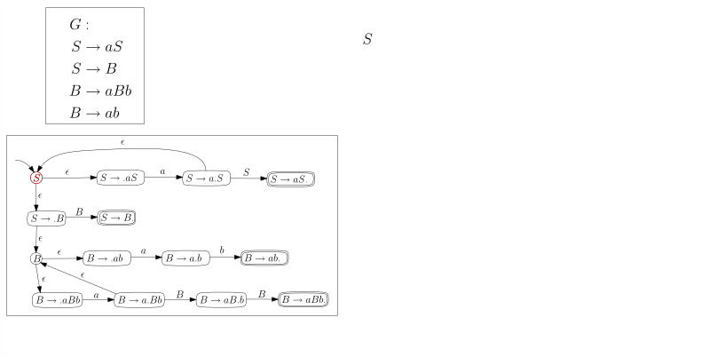./public/img/context-free/LR/dk-automaton-6-dea-aaabb/dk-dea-for-aaabb-01-03.svg
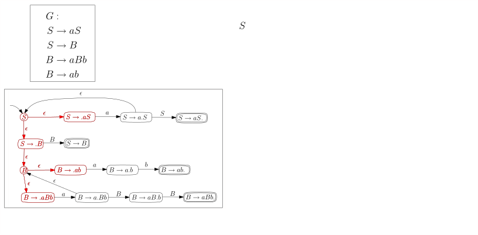./public/img/context-free/LR/dk-automaton-6-dea-aaabb/dk-dea-for-aaabb-01-04.svg
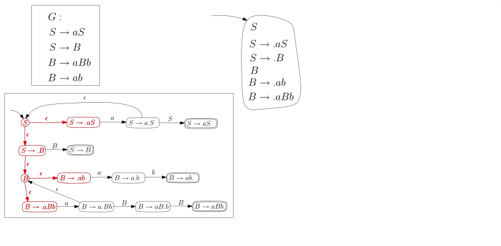./public/img/context-free/LR/dk-automaton-6-dea-aaabb/dk-dea-for-aaabb-01-05.svg
./public/img/context-free/LR/dk-automaton-6-dea-aaabb/dk-dea-for-aaabb-01-06.svg
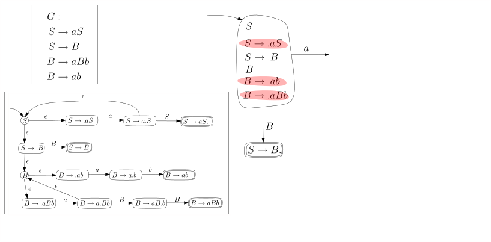./public/img/context-free/LR/dk-automaton-6-dea-aaabb/dk-dea-for-aaabb-01-07.svg
./public/img/context-free/LR/dk-automaton-6-dea-aaabb/dk-dea-for-aaabb-01-08.svg
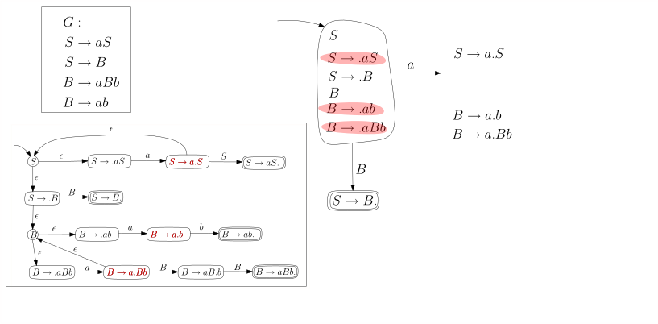./public/img/context-free/LR/dk-automaton-6-dea-aaabb/dk-dea-for-aaabb-01-09.svg
./public/img/context-free/LR/dk-automaton-6-dea-aaabb/dk-dea-for-aaabb-01-10.svg
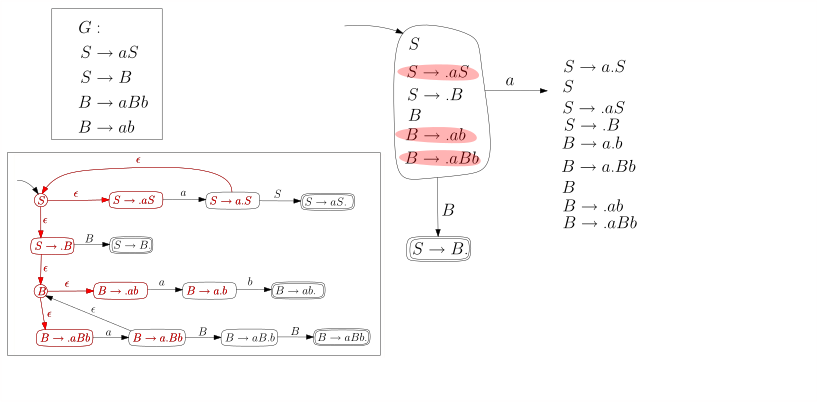./public/img/context-free/LR/dk-automaton-6-dea-aaabb/dk-dea-for-aaabb-01-11.svg
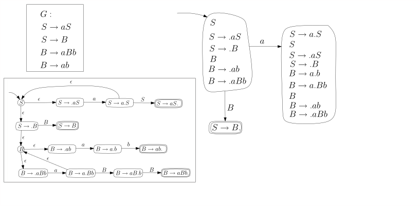./public/img/context-free/LR/dk-automaton-6-dea-aaabb/dk-dea-for-aaabb-01-12.svg
./public/img/context-free/LR/dk-automaton-6-dea-aaabb/dk-dea-for-aaabb-01-13.svg
./public/img/context-free/LR/dk-automaton-6-dea-aaabb/dk-dea-for-aaabb-01-14.svg
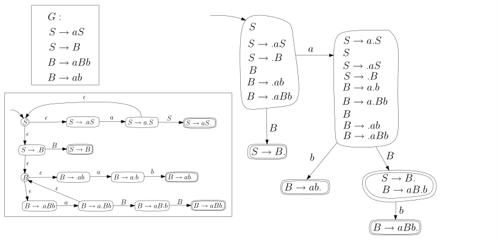./public/img/context-free/LR/dk-automaton-6-dea-aaabb/dk-dea-for-aaabb-01-15.svg
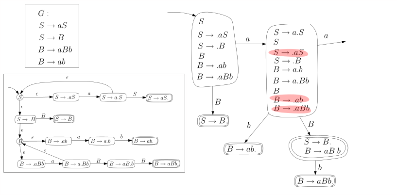./public/img/context-free/LR/dk-automaton-6-dea-aaabb/dk-dea-for-aaabb-01-16.svg
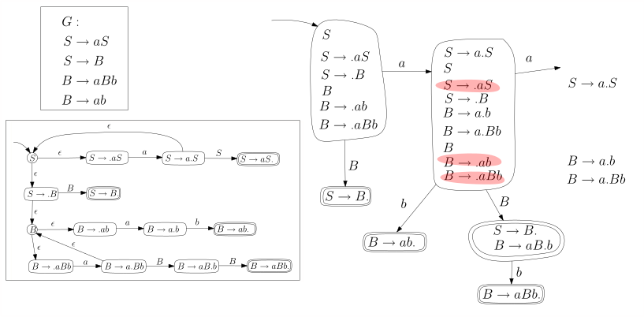./public/img/context-free/LR/dk-automaton-6-dea-aaabb/dk-dea-for-aaabb-01-17.svg
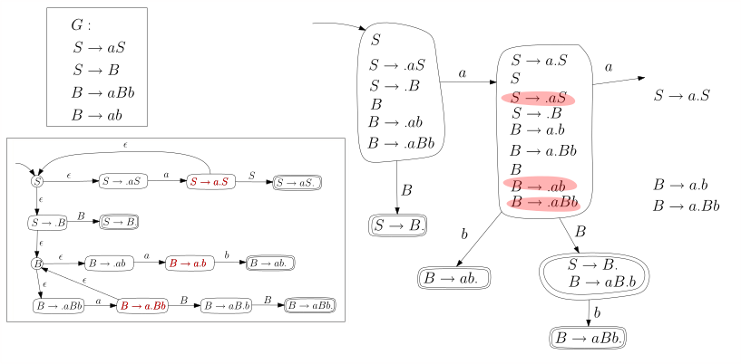./public/img/context-free/LR/dk-automaton-6-dea-aaabb/dk-dea-for-aaabb-01-18.svg
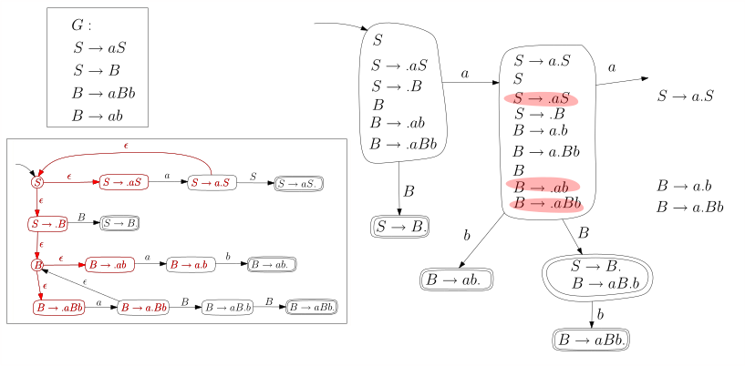./public/img/context-free/LR/dk-automaton-6-dea-aaabb/dk-dea-for-aaabb-01-19.svg
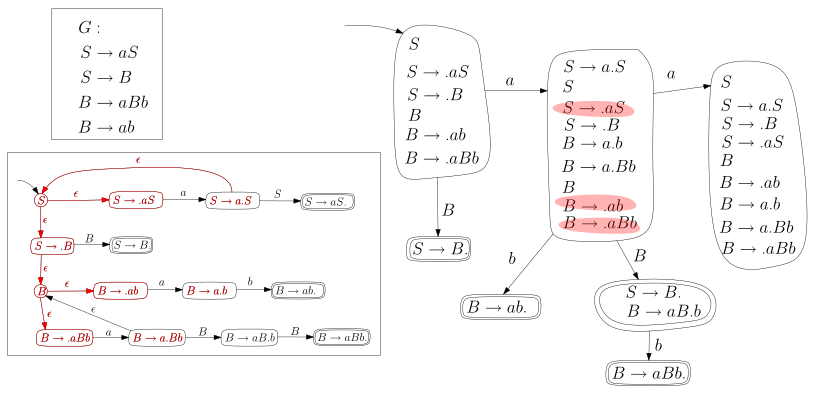./public/img/context-free/LR/dk-automaton-6-dea-aaabb/dk-dea-for-aaabb-01-20.svg
./public/img/context-free/LR/dk-automaton-6-dea-aaabb/dk-dea-for-aaabb-01-21.svg
Und hier nochmal das Endergebnis, wobei wir die./wly/06/09-dk-automat.wly:248:5 Zustände im DK-Automaten durchnummeriert haben:./wly/06/09-dk-automat.wly:249:5
Streng genommen ist das Ergebnis kein./wly/06/09-dk-automat.wly:255:5 deterministischer Automat, da zum Beispiel der./wly/06/09-dk-automat.wly:256:5 Startzustand keinen ./wly/06/09-dk-automat.wly:257:5$b$-Übergang./wly/06/09-dk-automat.wly:257:28 hat. Die./wly/06/09-dk-automat.wly:257:28 Zustandsübergangsfunktion./wly/06/09-dk-automat.wly:258:5 ./wly/06/09-dk-automat.wly:259:5$\delta: Q \times \Sigma \rightarrow Q$ ist gar keine./wly/06/09-dk-automat.wly:259:44 Funktion, sondern eine ./wly/06/09-dk-automat.wly:260:5partielle./wly/06/09-dk-automat.wly:260:29 Funktion, da./wly/06/09-dk-automat.wly:260:39 ./wly/06/09-dk-automat.wly:261:5$\delta(q,\sigma)$ für manche Eingabewerte./wly/06/09-dk-automat.wly:261:23 undefiniert ist. Wir verwenden aber die Konvention,./wly/06/09-dk-automat.wly:262:5 dass der Automat in diesem Falle in einen Todeszustand./wly/06/09-dk-automat.wly:263:5 wechselt, aus dem er nicht wieder herauskommt und der./wly/06/09-dk-automat.wly:264:5 nicht akzeptierend ist. Dies ist übersichtlicher, als./wly/06/09-dk-automat.wly:265:5 überall Todeskanten hinzuzufügen../wly/06/09-dk-automat.wly:266:5
Den DK-Automaten verwenden./wly/06/09-dk-automat.wly:269:9
Theorem 6.9.2 (DK-Test)../wly/06/09-dk-automat.wly:271:6 Sei ./wly/06/09-dk-automat.wly:272:21$G$ eine kontextfreie Grammatik ohne./wly/06/09-dk-automat.wly:272:29 nutzlose Nichtterminale und ei ./wly/06/09-dk-automat.wly:273:9$M$ der DK-Automat für./wly/06/09-dk-automat.wly:273:43 die Grammatik ./wly/06/09-dk-automat.wly:274:9$G$../wly/06/09-dk-automat.wly:274:26 Die Grammatik ./wly/06/09-dk-automat.wly:274:26$G$ ist LR(0) genau./wly/06/09-dk-automat.wly:274:45 dann, wenn folgende zwei Bedingungen gelten:./wly/06/09-dk-automat.wly:275:9
-
(DK.1) Ein akzeptierender Zustand von ./wly/06/09-dk-automat.wly:279:17$M$ (der ja./wly/06/09-dk-automat.wly:279:58 eine Menge von Zuständen des NDK-Automaten ist)./wly/06/09-dk-automat.wly:280:17 enthält genau einen akzeptierenden NDK-Zustand, also./wly/06/09-dk-automat.wly:281:17 genau ein ./wly/06/09-dk-automat.wly:282:17$\boxed{X \rightarrow \beta .}$
-
(DK.2) Wenn ./wly/06/09-dk-automat.wly:285:17$q$ ein akzeptierender Zustand von ./wly/06/09-dk-automat.wly:285:32$M$ ./wly/06/09-dk-automat.wly:285:67 ist und ./wly/06/09-dk-automat.wly:286:17$q \step{\sigma} q'$,./wly/06/09-dk-automat.wly:286:45 dann ist ./wly/06/09-dk-automat.wly:286:45$\sigma$ ein./wly/06/09-dk-automat.wly:286:64 Nichtterminal../wly/06/09-dk-automat.wly:287:17
Wenn diese beiden Bedingungen gelten, sagen wir, dass./wly/06/09-dk-automat.wly:289:9 ./wly/06/09-dk-automat.wly:290:9$G$ den DK-Test bestanden hat. Das Theorem sagt also:./wly/06/09-dk-automat.wly:290:12 ./wly/06/09-dk-automat.wly:291:9$G$ ist LR(0) genau dann, wenn es den DK-Test./wly/06/09-dk-automat.wly:291:12 besteht../wly/06/09-dk-automat.wly:292:9
Beweisskizze../wly/ ./wly/ Wir erinnern den Leser noch einmal an die alternative./wly/06/09-dk-automat.wly:296:9 Charakterisierung von LR(0)-Sprachen, nämlich :./wly/06/09-dk-automat.wly:297:9
./wly/06/09-dk-automat.wly:300:14Lemma 6.7.6./wly/, noch einmal./wly/06/09-dk-automat.wly:300:14 (LR(0), äquivalente Formulierung)../wly/06/09-dk-automat.wly:301:13 Eine Grammatik ./wly/06/09-dk-automat.wly:301:48$G$ ./wly/06/09-dk-automat.wly:301:67 ist LR(0) genau dann, wenn für alle korrekten./wly/06/09-dk-automat.wly:302:13 Linksreduktionsschritte./wly/06/09-dk-automat.wly:303:13 ./wly/06/09-dk-automat.wly:304:13$\alpha \beta w \rstep{} \alpha Xw$ und./wly/06/09-dk-automat.wly:304:48 ./wly/06/09-dk-automat.wly:305:13$\alpha' \beta' w' \rstep{} \alpha' X'w'$ gilt:./wly/06/09-dk-automat.wly:305:54
-
Falls ./wly/06/09-dk-automat.wly:309:21$\alpha \beta = \alpha' \beta'$ dann auch./wly/06/09-dk-automat.wly:309:58 ./wly/06/09-dk-automat.wly:310:21$\beta = \beta'$ und ./wly/06/09-dk-automat.wly:310:37$X= X'$;./wly/06/09-dk-automat.wly:310:49 in Worten: wenn die./wly/06/09-dk-automat.wly:310:49 Fronten identisch sind, dann auch die./wly/06/09-dk-automat.wly:311:21 Reduktionsschritte../wly/06/09-dk-automat.wly:312:21
-
Wenn ./wly/06/09-dk-automat.wly:315:21$\alpha' \beta' = \alpha \beta \varphi$ und./wly/06/09-dk-automat.wly:315:65 ./wly/06/09-dk-automat.wly:316:21$|\varphi| \geq 1$,./wly/06/09-dk-automat.wly:316:39 dann ./wly/06/09-dk-automat.wly:316:39$\varphi \not \in \Sigma^*$;./wly/06/09-dk-automat.wly:316:73 ./wly/06/09-dk-automat.wly:316:73 in Worten: wenn ./wly/06/09-dk-automat.wly:317:21$\front(\gamma)$ ein echter Präfix./wly/06/09-dk-automat.wly:317:53 von ./wly/06/09-dk-automat.wly:318:21$\front(\gamma')$ ist, dann muss in dem./wly/06/09-dk-automat.wly:318:42 überstehenden Teil von ./wly/06/09-dk-automat.wly:319:21$\front(\gamma)$ mindestens./wly/06/09-dk-automat.wly:319:60 ein Nichtterminal vorkommen../wly/06/09-dk-automat.wly:320:21
Es ist nicht schwer zu sehen, dass (DK.1) äquivalent./wly/06/09-dk-automat.wly:322:9 zu Punkt 1 des Lemmas ist. Wenden wir uns (DK.2) und./wly/06/09-dk-automat.wly:323:9 Punkt 2 zu. Wenn Punkt 2 ./wly/06/09-dk-automat.wly:324:9nicht./wly/06/09-dk-automat.wly:324:35 gilt, dann gibt es./wly/06/09-dk-automat.wly:324:41 korrekte Reduktionsschritte./wly/06/09-dk-automat.wly:325:9
$$
\begin{align*}
\alpha \beta w \rstep{} \alpha X w \\ \alpha \beta
\sigma w' = \alpha' \beta' w' \rstep{} \alpha' X' w'
\end{align*}
$$
Wenn wir dem Automaten den Präfix ./wly/06/09-dk-automat.wly:332:9$\alpha \beta$ ./wly/06/09-dk-automat.wly:332:57 füttern, bringt er uns in einen Zustand, der die./wly/06/09-dk-automat.wly:333:9 ./wly/06/09-dk-automat.wly:334:9$\boxed{X \rightarrow \beta.}$ enthält, da./wly/06/09-dk-automat.wly:334:39 ./wly/06/09-dk-automat.wly:335:9$\alpha \beta$ ja eine Front ist. Dieser Zustand muss./wly/06/09-dk-automat.wly:335:23 allerdings einen Übergang haben, der mit ./wly/06/09-dk-automat.wly:336:9$\sigma$ ./wly/06/09-dk-automat.wly:336:58 gelabelt ist, dem ersten Zeichen von ./wly/06/09-dk-automat.wly:337:9$\varphi$,./wly/06/09-dk-automat.wly:337:55 da ja./wly/06/09-dk-automat.wly:337:55 ./wly/06/09-dk-automat.wly:338:9$\alpha \beta \sigma$ ein Präfix der Front./wly/06/09-dk-automat.wly:338:30 ./wly/06/09-dk-automat.wly:339:9$\alpha' \beta'$ ist. Somit gilt (DK.2) nicht. Wenn./wly/06/09-dk-automat.wly:339:25 umgekehrt (DK.2) nicht gilt, dann gibt es einen./wly/06/09-dk-automat.wly:340:9 akzeptierenden Zustand ./wly/06/09-dk-automat.wly:341:9$q$ (der also./wly/06/09-dk-automat.wly:341:35 ./wly/06/09-dk-automat.wly:342:9$\boxed{X\rightarrow \beta.}$ enthält) und eine./wly/06/09-dk-automat.wly:342:38 ausgehende Kante ./wly/06/09-dk-automat.wly:343:9$q \step{\sigma} q'$ mit einem./wly/06/09-dk-automat.wly:343:46 Terminal ./wly/06/09-dk-automat.wly:344:9$\sigma$../wly/06/09-dk-automat.wly:344:26
Übungsaufgabe 6.9.1./wly/06/09-dk-automat.wly:346:10 ./wly/06/09-dk-automat.wly:346:30 Zeigen Sie: wenn ./wly/06/09-dk-automat.wly:347:13$G$ keine nutzlosen Nichtterminale./wly/06/09-dk-automat.wly:347:33 hat, dann gibt es im NDK-Automaten für jeden Zustand./wly/06/09-dk-automat.wly:348:13 ./wly/06/09-dk-automat.wly:349:13$q$ eine Übergangsfolge ./wly/06/09-dk-automat.wly:349:16$q \steps{v} q'$ zu einem./wly/06/09-dk-automat.wly:349:53 akzeptierenden Zustand ./wly/06/09-dk-automat.wly:350:13$q'$,./wly/06/09-dk-automat.wly:350:40 wobei ./wly/06/09-dk-automat.wly:350:40$v$ ausschließlich./wly/06/09-dk-automat.wly:350:51 aus ./wly/06/09-dk-automat.wly:351:13$G$ -Terminalen besteht, also ./wly/06/09-dk-automat.wly:351:20$v \in \Sigma^*$../wly/06/09-dk-automat.wly:351:63 ./wly/06/09-dk-automat.wly:351:63 Zeigen Sie das selbe für den DK-Automaten../wly/06/09-dk-automat.wly:352:13
Es gibt also einen Weg./wly/06/09-dk-automat.wly:354:9 ./wly/06/09-dk-automat.wly:355:9$q \step{\sigma} q' \steps{v} q''$ für./wly/06/09-dk-automat.wly:355:43 ./wly/06/09-dk-automat.wly:356:9$v \in \Sigma^*$ und einen akzeptierenden Zustand./wly/06/09-dk-automat.wly:356:25 ./wly/06/09-dk-automat.wly:357:9$q''$../wly/06/09-dk-automat.wly:357:14 Es sind also sowohl ./wly/06/09-dk-automat.wly:357:14$\alpha \beta$ als auch./wly/06/09-dk-automat.wly:357:50 ./wly/06/09-dk-automat.wly:358:9$\alpha \beta \sigma v$ Fronten von ./wly/06/09-dk-automat.wly:358:32$G$,./wly/06/09-dk-automat.wly:358:48 und./wly/06/09-dk-automat.wly:358:48 ./wly/06/09-dk-automat.wly:359:9$\sigma v$ besteht nur aus Terminalen. Das heißt,./wly/06/09-dk-automat.wly:359:19 dass Punkt 2 der Schlussfolgerung nicht gilt../wly/06/09-dk-automat.wly:360:9A./wly/\(\square\)./wly/
LR(1)-Grammatiken./wly/06/09-dk-automat.wly:364:9
Hier ist der nichtdeterministische Automat für ./wly/06/09-dk-automat.wly:366:5$G$ ./wly/06/09-dk-automat.wly:366:55 mit Lookahead 1../wly/06/09-dk-automat.wly:367:5
Jetzt machen wir den Automaten deterministisch:./wly/06/09-dk-automat.wly:374:5